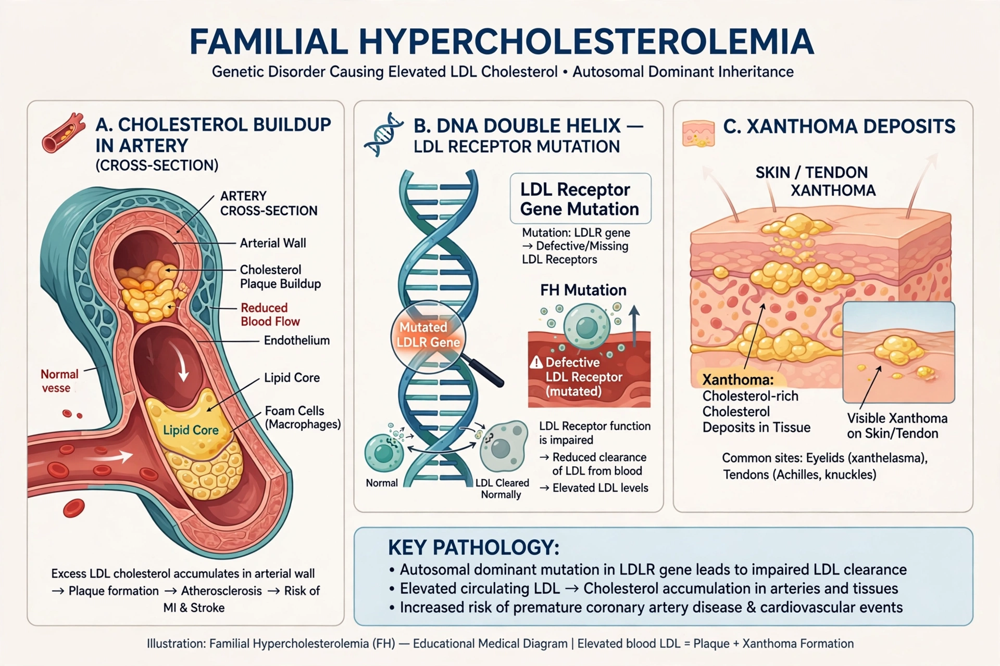

Familial hypercholesterolemia (FH) is a genetic disorder characterised by markedly elevated low-density lipoprotein (LDL) cholesterol from birth and a high risk of premature cardiovascular disease. It is one of the most common inherited metabolic disorders, affecting roughly 1 in 250–300 people in its heterozygous form.

Most cases result from loss-of-function mutations in the LDL receptor gene (LDLR), which impairs clearance of LDL from the blood; rarer causes affect apolipoprotein B (APOB) or cause gain of function in PCSK9. Heterozygotes have roughly double-normal LDL; homozygotes (about 1 in a million) have extreme levels and can suffer heart disease in childhood.
Signs include tendon xanthomas (especially in the Achilles), xanthelasma and corneal arcus at a young age, plus a family history of early heart disease. Diagnosis uses criteria such as the Dutch Lipid Clinic Network or Simon Broome scores, confirmed by genetic testing; cascade screening of relatives is recommended because FH is underdiagnosed.
Lifelong LDL lowering begins with high-intensity statins, usually combined with ezetimibe and, where needed, PCSK9 monoclonal antibodies (evolocumab, alirocumab) or inclisiran; severe homozygous cases may need lipoprotein apheresis or liver transplantation. Early treatment greatly reduces cardiovascular risk.
Recreated from memory.